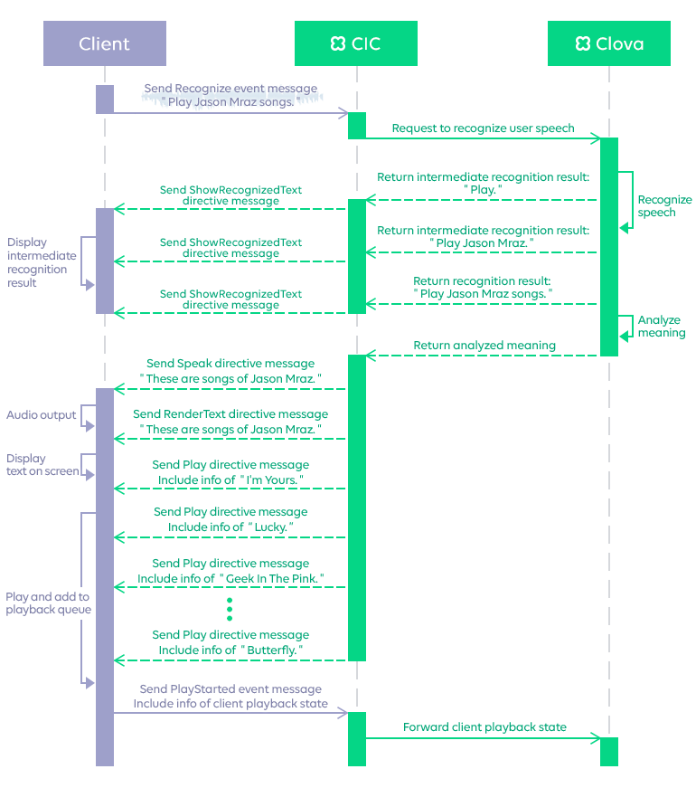

CIC overview
This documentation explains Clova Interface Connect ('CIC' hereinafter) in detail. It will help you understand what CIC is and how it works, and provides you with the guides and references for CIC.
What is CIC?
CIC is a platform that serves as an interface between Clova and a client aiming to provide AI assistant services, such as PC/mobile apps, mobile devices or home appliances. CIC provides CIC APIs with which clients can send user requests to Clova and Clova can return responses to clients.

CIC interaction structure
Clients use the CIC APIs to send user requests to CIC and receive responses from CIC. All communications with CIC is done over the HTTP/2 protocol. The CIC APIs provide functions such as speech recognition, speech synthesis and generation of audio output, music playback, personal schedule management, alarm/timer setup, and so on.
It is through these CIC APIs that various communications are made between clients and CIC. Depending on which way a communication is directed to, the message type can be either one of the following.
Event message: Messages that clients send to CIC. You send event messages to send user requests (speech input) or notify when client states have changed.
Directive message: Messages that CIC returns to clients to control their behavior. For example, a directive message can instruct an app to display certain information or play synthesized speech audio. Directive messages are returned in the following situations.
- When responding to user requests. Directive messages are returned to instruct clients to do specific actions after recognizing user's speech input (user intent).
- When certain conditions require CIC to send directive messages to clients without any preceding user requests.
This sequence diagram shows how messages are sent back and forth between CIC and client.

Dialog model
The following explains CIC's dialog model.
Indirect dialog structure
Users can have a series of dialogs with Clova. They make requests to Clova to get information or perform certain actions, and Clova returns requested information or results of performing those actions. Such dialogs between users and Clova are relayed by clients and CIC.
Usually, users have a dialog with Clova in the following steps.
- A user starts speech input.
- Your client records the user's speech and sends it to CIC.
- CIC returns results and your client delivers those results to the user by playing them or displaying on a screen.
Due to the indirect nature of the dialog structure, dialogs between users and Clova have the following characteristics.
- It takes more time than a direct dialog to send requests or receive responses.
- It is difficult to respond promptly when users attempt to open a dialog with a new topic (request).
For example, a user asks Clova, "How's the weather today?". Before Clova responds or during Clova is responding, the user makes another request by saying, "Play some upbeat music." In this case, the user probably does not want to get weather information anymore. If it were a direct dialog, you would easily stop or cancel responding. However, since dialogs need to be relayed by your client, you must make your client recognize the situation and perform appropriate actions.
Dialog ID and client behavior
To solve the issue of indirect dialog structure, we use a dialog ID. To identify individual user requests, a dialog ID is created every time a user starts speech input. Your client must keep the dialog ID of the last user request it has sent to CIC. Also, it must update the last dialog ID every time it sends a user request.
When CIC returns a directive message to your client to respond to the user request, the message includes a dialog ID which is the same as the one it has received with the user request. In short, dialog IDs help you confirm that results returned from CIC correspond to their original user requests. Implement your client to perform the following actions.
- Create a new dialog ID every time a user starts new speech input.
- Send the user request to CIC, using a SpeechRecognizer.Recognize event message.
- At this point, the client must replace its last existing dialog ID with the newly created dialog ID.
- When replacing the last existing dialog ID, the client must discard all directive messages associated to the dialog ID, whether they are being processed or waiting to be processed.
- When CIC returns a directive message with processing results, compare the dialog ID of the directive message with the last existing dialog ID kept at the client side.
- If they match, return the result to the user based on the directive message it has received.
- If they do not match, discard the received directive message.